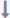

<!DOCTYPE html>
<html>
<head>
<meta charset="UTF-8">
<META HTTP-EQUIV="Pragma" CONTENT="no-cache"><META HTTP-EQUIV="Cache-Control" CONTENT="no-cache"><META HTTP-EQUIV="Expires" CONTENT="0">
<title>流程信息</title>

<link rel="stylesheet" href="../../shared/bootstrap/css/bootstrap.min.css" type="text/css" />
<link rel="stylesheet" href="../../shared/css/index-ess.css" type="text/css" />
<link rel="stylesheet" href="../../shared/css/font-awesome.min.css" type="text/css" />
<link rel="stylesheet" href="../../shared/css/document.css" type="text/css" />
<link rel="stylesheet" href="../../shared/css/dj-bootstrap.css" type="text/css" />
<link rel="stylesheet" href="../../shared/css/dj-tab.css" type="text/css" />
<link rel="stylesheet" href="../../shared/css/main.css" type="text/css" />
<link rel="stylesheet" href="../../shared/bootstrap/css/bootstrap.css" type="text/css" />
<!-- jqgrid样式 -->
<link href="../../shared/jqgrid/css/ui.jqgrid.css" type="text/css" rel="stylesheet" />
<link href="../../shared/jqgrid/css/css/flick/jquery-ui-1.8.16.custom.css" type="text/css" rel="stylesheet" />
<link rel="stylesheet" href="../../shared/css/workflow.css" type="text/css" />

<!--javascript引用部分 -->
<script src="../../shared/js/jquery-1.8.3.min.js" type="text/javascript"></script>
<script src="../../shared/js/jquery.extend.js" type="text/javascript"></script>
<script src="../../shared/js/myLayer.js" type="text/javascript"></script>
<script src="../../shared/ztree/js/jquery.ztree.core.min.js" type="text/javascript"></script>

<!-- jqgridjs -->
<script src="../../shared/jqgrid/js/jquery.jqGrid.min.js" type="text/javascript"></script>
<script src="../../shared/jqgrid/js/jquery.jqGrid.extend.js" type="text/javascript"></script>
<script type="text/javascript" src="../../shared/jqgrid/js/i18n/grid.locale-cn.js"></script>

<script src="../../shared/bootstrap/js/bootstrap.min.js" type="text/javascript"></script>
<script src="../../shared/layer/layer.js" type="text/javascript"></script>

<!-- my97 DatePicker  -->
<script src="../../shared/my97/WdatePicker.js" type="text/javascript"></script>
<script src="../../shared/plugins/utils.js" type="text/javascript"></script>

<script src="../../shared/js/jquery.validate.min.js"type="text/javascript"></script>
<script src="../../shared/js/jquery.additional-methods.js"type="text/javascript"></script>

<style type="text/css">

</style>
</head>
<body>
	<input type="hidden" id="gzlid" name="gzlid">
	<div class="container">
		<div class="chartLayer radius5" id="alllcjd"></div>
	</div>
<script type="text/javascript">
	var urlPath=getUrlPath();
	//根节点ID
	var rootid="";
	
    //初始化工作流程图
    $(document).ready(function() {
    	var gzlid = GetQueryString("gzlid");
    	$("#gzlid").val(gzlid);
        $.post(urlPath+"/lcdyController/getAllGzlcJd.mvc?_rm="+Math.random(),{gzlid:gzlid},function(retval){
        	 drawAllNode(retval.allnode);
             drawAllLine(retval.allline);
        },"json");
	});
    
	function GetQueryString(name){
	    var reg = new RegExp("(^|&)"+ name +"=([^&]*)(&|$)");
	    var r = window.location.search.substr(1).match(reg);
	    if(r!=null)return  decodeURI(r[2]); return null;
	}
        
    //画流程中的节点
    function drawAllNode(tdata){
        //添加起始节点
        var thtml="<span class='start' title='双击添加根节点' onclick=\"addNode('root');\">开始</span>";
        //添加列表开始
        thtml+="<ul>";

        if(tdata.length>0&&tdata[0].length>0){
            rootid=tdata[0][0].jdid;
        }
           
        for(var i=0;i<tdata.length;i++){
            for(var j=0;j<tdata[i].length;j++){
                thtml+="<li id='jd"+tdata[i][j].jdid+"'>";				
               	thtml+="<span><a class='btn btn-mini btn-primary' title='在当前节点下增加新节点' onclick=\"addNode('"+tdata[i][j].jdid+"')\" style='margin-right:8px' >加节点</a>";
               	thtml+="<a class=\"btn btn-mini\" onclick=\"deletenode('"+tdata[i][j].jdid+"')\">删除</a></span>";
               	thtml+="<h4><a href='javascript:return false;' >"+tdata[i][j].jdsm+"["+tdata[i][j].gnmc+"]</a></h4>";
               	if(tdata[i][j].users!=""){
               		thtml+="<p><i>"+tdata[i][j].users+"</i></p>";
               	}          	                	
               	thtml+="</li>";
                   	
                    //thtml+="<tr  ><td style='width:100%;text-align:center;'>";
//                     thtml+="<div id='jd"+tdata[i][j].jdid+"' style='width:300px;' >"
//                     thtml+="<table border='1' cellspacing='0' cellpadding='0' style='width:300px;height:80px' height='100%'>";        
//                     thtml+="<tr><td align='center'><input type='button' title='在当前节点下增加新节点' onclick=\"addNode('"+tdata[i][j].jdid+"')\" value='加节点'>&nbsp;";
//                     thtml+="<input type='button' onclick=\"deletenode('"+tdata[i][j].jdid+"')\" value='删除'></td></tr>";
//                     thtml+="<tr><td align='center'><a href='#' > "+tdata[i][j].jdsm+"["+tdata[i][j].gnmc+"]</a></td></tr>";
//                     thtml+="<tr><td align='center'>"+tdata[i][j].users+"</td></tr>";
//                     thtml+="</table></div>";
                   
                    //thtml+="</td></tr>";
                   
            }
        }
            
        //thtml+="";
        //添加结束节点
        thtml+="</ul> <span class='end'>结束</span>";	
      	//_winalert(thtml);
        $("#alllcjd").html(thtml);
    }
	
	//画各节点的关系
    function drawAllLine(tdata){
        for(var i=0;i<tdata.length;i++){
            var stobj=$("#jd"+tdata[i].jdid);
            if(stobj.length<1) continue;
			stobj.append("");
 			//stobj.after("<div></div>");               
		}
	}
                
	function doclose(){
		//先得到当前iframe层的索引
        var index = window.parent.layer.getFrameIndex(window.name);
        //再执行关闭   
        window.parent.layer.close(index);
	}
        
	//添加工作流节点
	function addNode(tpreid){
		layer.open({
    		title:'工作流节点添加',
   			type: 2,
   			content: "../workflow/gzlc_common_lcdy_addnode.html?preid="+tpreid+"&gzlid="+document.getElementById("gzlid").value,
   			area: ['600px', '350px'],
   			btn: ['保存','关闭'],
   			maxmin: true,    			
            yes: function(index){
                //保存节点数据
                var res = window["layui-layer-iframe" + index].saveData(index);
                return false;
            },
            cancel: function(){
                //右上角关闭回调
            }
    	});
	}
        
	//刷新页面
	function doFresh(){
		window.location.replace('../workflow/gzlc_common_lcdy.html?gzlid='+document.getElementById("gzlid").value);
	}
        
	//修改节点进入条件
	function updateexp(tjdgxid,tpreid){
		layer.open({
			title:'修改节点启动表达式',
			type: 2,
   			content: "../workflow/gzlc_common_lcdy_addnode.html?preid="+tpreid+"&jdgxid="+tjdgxid+"&gzlid="+document.getElementById("gzlid").value,
   			area: ['600px', '350px'],
   			btn: ['保存','关闭'],
   			maxmin: true,    			
            yes: function(index){
				//保存节点数据
                var res = window["layui-layer-iframe" + index].saveData(index);
                return false;
            },
            cancel: function(){
                //右上角关闭回调
            }			
		});
	}       
       
    //删除节点    
	function deletenode(tjdid){
    	console.log(tjdid);
       	var params={};
       	params["jdid"]=tjdid;
       	params["gzlid"]=$("#gzlid").val();
       	
       	layer.alert('确定要删除此节点吗？', {
			time: 0, //不自动关闭,
			btn: ['确定', '取消'],
			yes: function(index){
	        	$.post(urlPath+"/lcdyController/deleteNode.mvc?_rd="+Math.random(),params,function(retval){
	       			msg("节点删除成功！");
	       			doFresh();//刷新
	        	},"json");
			}
		});
	}
    
        
</script>
</body>
</html>